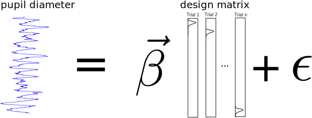

Interactive version:
[1]:
import sys
sys.path.insert(0,"../")
import pypillometry as pp
import numpy as np
import pandas as pd
import pylab as plt
import scipy
import scipy.signal as signal
from scipy.stats import pearsonr
import itertools
from joblib import Parallel, delayed
from IPython.utils import io
import plotnine as gg
import os
Estimation of tonic and phasic pupillometric signals¶
Matthias Mittner
pupil-symposium, 6.2.2020
Universitetet i Tromsø
Data model¶
pupil signal is made up of a slowly (<.1 Hz) fluctuating process
and stereotypic responses to (internal or external):
Pupil-response function (PRF)
the amplitude of the events is variable over time
the shape of the PRF is fixed per subject or can vary over time
[3]:
plt.figure(figsize=(15,5));
pp.plot_prf()
Simulated (fake) data¶
[4]:
dd=pp.create_fake_pupildata(ntrials=100, isi=1100.0, rtdist=(800,100))
d=dd.sub_slice(start=1, end=1.5, units="min")
fac=d._unit_fac("min")
plt.figure(figsize=(15,10))
plt.subplot(311)
plt.plot(d.tx*fac, d.sim_baseline); plt.title("baseline");
plt.ylim(d.sim_baseline.min()-5, d.sy.max())
plt.subplot(312)
x1=pp.pupil_build_design_matrix(d.tx, d.event_onsets, d.fs, d.sim_params["prf_npar"][0], d.sim_params["prf_tmax"][0], 6000)
plt.plot(d.tx*fac, d.sim_response_coef*x1.T); plt.title("events")
plt.subplot(313)
d.plot(interactive=False, units="min")
Estimate tonic and phasic components¶
per-trial estimates of tonic/phasic pupillary responses
Traditionally:
tonic (baseline): mean signal in interval [-200,0] ms before stimulus
phasic (response):
difference peak/max in interval [0,2000] ms post-stimulus to baseline
difference mean in time-range of expected peak, e.g., [800,1200] ms post-stim to baseline
[5]:
d2=dd.sub_slice(4500, 13000, units="ms") # take a small part for visualization
with io.capture_output() as cap:
tonic_est =d2.stat_per_event((-200,0), statfct=np.mean)
phasic_est=d2.stat_per_event((-0,2000), statfct=np.max)-tonic_est
plt.figure(figsize=(10,6))
d2.plot(model=False, units="ms")
plt.vlines(d2.event_onsets, *plt.ylim(), color="grey", alpha=0.5)
plt.plot(d2.event_onsets, tonic_est, "o",color="red")
plt.plot(d2.event_onsets, phasic_est+tonic_est, "o",color="blue");
plt.title("Traditional tonic/phasic estimates");
traditional method can mistake build-up of responses for baseline fluctuations
Novel Algorithm for baseline extraction¶
in the absence of events, the pupil goes back to baseline
therefore: throughs in the the curve are indicative of baseline
Algorithm:
detect throughs
find the most “prominent” ones
create smooth curve through these points that stays below signal
[6]:
d=pp.create_fake_pupildata(ntrials=50, isi=1500.0, rtdist=(800,100),
prop_spurious_events=0.02 )\
.lowpass_filter(cutoff=2)\
.scale()\
.sub_slice(5,25,units="sec")
plt.figure(figsize=(10,5)); d.plot(interactive=False, model=False, units="sec")
lowest throughs are prioritized
account for build-up of responses that look like baseline fluctuations
Extract peaks/throughs and rate their prominence¶
[7]:
peaks_ix=signal.find_peaks(-d.sy)[0]
prominences=signal.peak_prominences(-d.sy, peaks_ix)[0]
peaks=d.tx[peaks_ix]
plt.figure(figsize=(15,5));
d.plot(model=False, units="sec")
plt.errorbar(peaks/1000., d.sy[peaks_ix], np.vstack((np.zeros_like(prominences), prominences)), 0, "o");
Smooth curve through peaks…¶
[8]:
interp_methods=["nearest","linear","quadratic","cubic"]
plt.figure(figsize=(12,6))
for i,met in enumerate(interp_methods):
plt.subplot(2,2,i+1)
f=scipy.interpolate.interp1d(peaks, d.sy[peaks_ix], kind=met, fill_value="extrapolate")
d.plot(baseline=False, model=False, units="ms")
plt.plot(d.tx, f(d.tx))
plt.gca().axes.get_xaxis().set_visible(False)
plt.ylim(d.sim_baseline.min(), d.sy.max())
plt.title(met)
simple interpolate between lower peaks?
Better Solution: B-Spline basis functions¶
weighted sum of B-spline basis functions (knots peaks): guarantees smoothness
customized fit to go through peaks and stay below signal
[9]:
knots=np.concatenate( ([d.tx.min()], peaks, [d.tx.max()]) ) ## peaks as knots
B=pp.bspline(d.tx, knots, 3)
plt.figure(figsize=(20,8))
plt.subplot(2,1,1)
plt.plot(d.tx, B);
plt.plot(peaks, 0.8+np.zeros_like(peaks), ".");
plt.subplot(2,1,2)
for i in range(10):
coef=np.random.randn(B.shape[1])
sig=np.dot(B,coef)
plt.plot(d.tx, sig, color="grey", alpha=0.2)
plt.plot(peaks, d.sy[peaks_ix], "o", color="red")
d.plot(simulated=False, units="ms");
Staying “below the signal”¶
[10]:
ny=800
x=d.tx
pad=0.5
y=np.linspace(d.sy.min()-pad, d.sy.max()+pad, ny)
[X,Y]=np.meshgrid(x,y)
SY=np.tile(d.sy, (ny,1))
py=pp.p_asym_laplac_kappa(-1*(Y-SY), 0, 1, 0.2)
def prominence_to_lambda(w, lam_min=1, lam_max=100):
w2=lam_min+((w-np.min(w))/(np.max(w-np.min(w))))*(lam_max-lam_min)
return w2
plt.figure(figsize=(20,5))
d2=d.copy()
start=d.tx[0]
d2.tx=d.tx-start
plt.imshow(py, origin='lower', cmap="jet", aspect="auto", alpha=0.2, extent=[0,d2.tx.max(),d2.sy.min()-pad, d2.sy.max()+pad])
plt.plot(d2.tx, d2.sy, color="green")
plt.errorbar(peaks-start, d2.sy[peaks_ix], yerr=prominence_to_lambda(prominences)/200., fmt="o", color="black", elinewidth=5);
estimate coefficients B-spline
criteria:
the curve has to be (almost) completely below the pupil-signal
it should go through the high-prominence peaks with high probability
it should go through the lower-prominence peaks with lower probability
use: Asymmetric Laplace distribution
parameters:
\(\mu\) (peak location)
\(\lambda\) (inverse variance, “wideness”)
\(\kappa\) (assymetry parameter)
distribution centered at signal \(\rightarrow\) \(\mu=0\)
set asymmetry parameter \(\kappa\) as follows:
specify the probability \(p_a\) that the baseline-curve can take on values above the pupil signal, e.g., \(p_a=0.05\)
using the properties of the distribution determine
\[\kappa=\frac{\sqrt{p_a}}{\sqrt{1-p_a}}\]
no matter what \(\lambda\) is chosen, the negative part of the distribution will integrate to \(p_a\)
[11]:
mu=0
lam=5
pa=0.05
kappa=np.sqrt(pa)/np.sqrt(1-pa)
print("kappa=",kappa)
plt.figure(figsize=(10,5))
y=np.linspace(-1,10,500)
py=pp.p_asym_laplac_kappa(y,0,5,kappa)
plt.plot(y,py)
propneg=np.sum(py[y<=0])/np.sum(py)
print("Proportion negative=",propneg)
kappa= 0.22941573387056177
Proportion negative= 0.052898137321281825
prominence of the peaks¶
map the prominence of the peaks to the width of this distribution:
mapping prominence \(\rightarrow\) \(\lambda\)
how far below the signal can the baseline go? parameter: \(\lambda_{sig}\)
assume z-transformed PD, so 1 unit is pretty large: \(\lambda_{sig}=1\)
for the highest-prominence peaks, the baseline-curve “snuggles” tightly against the signal
\(\lambda_{max}=100\)
[12]:
plt.figure(figsize=(15,5))
lam_sig=1.0
lam_max=100.0
y=np.linspace(-1,10,500)
py1=pp.p_asym_laplac_kappa(y,0,lam_sig,kappa)
py2=pp.p_asym_laplac_kappa(y,0,lam_max,kappa)
plt.subplot(121); plt.plot(y,py1); plt.title(r"$\lambda_{sig}=$%s"%lam_sig);
plt.subplot(122); plt.plot(y,py2); plt.title(r"$\lambda_{max}=$%s"%lam_max);
the signal should be closer to the lower peaks than to the rest of the signal but can still go away if the prominence is very low
we therefore set the lower boundary for \(\lambda\) for any peak to be the same as for the rest of the signal \(\lambda_{min}=\lambda_{sig}\)
define mapping
\[\text{prominence}\rightarrow \lambda\]such that \(\lambda \in [\lambda_{min},\lambda_{max}]\) and higher prominence is associated with higher \(\lambda\)
we start by mapping the (strictly positive) prominence \(\rho_i\) into the interval [0,1] and then map it linearly into \([\lambda_{min},\lambda_{max}]\)
\[\lambda_i=\lambda_{min}+\frac{\rho_i-\min_i\rho_i}{\max_i(\rho_i-\min_i\rho_i)}\left(\lambda_{max}-\lambda_{min}\right)\]
[13]:
# convert
w=prominence_to_lambda(prominences)
plt.figure(figsize=(20,5))
plt.subplot(121)
plt.hist(w);
plt.title(r"Distribution of the $\lambda$ values");
plt.subplot(122)
y=np.linspace(-0.5,2,500)
for i,cw in enumerate(w):
py=pp.p_asym_laplac_kappa(y, 0, cw, kappa)
plt.plot(y,py, color="grey", alpha=0.5)
plt.title(r"Distributions for these $\lambda$ values");
Estimate baseline¶
implemented as Bayesian model (Stan)
free parameters are the spline-coefficients
[14]:
d=d.estimate_baseline(method="envelope_iter_bspline_1")
plt.figure(figsize=(15,5)); d.plot((6, 22),units="sec",model=False)
WARNING:pystan:Automatic Differentiation Variational Inference (ADVI) is an EXPERIMENTAL ALGORITHM.
WARNING:pystan:ADVI samples may be found on the filesystem in the file `/var/folders/28/_ftmv1_n41n48znrymwflm940000gp/T/tmphamv9sz1/output.csv`
WARNING:pystan:Automatic Differentiation Variational Inference (ADVI) is an EXPERIMENTAL ALGORITHM.
WARNING:pystan:ADVI samples may be found on the filesystem in the file `/var/folders/28/_ftmv1_n41n48znrymwflm940000gp/T/tmp6hpwu7k6/output.csv`
Using cached StanModel
baseline seems to “high”
because of accumulation of pupil-responses to stimuli
solution:
estimate responses riding on top of signal
remove them
repeat baseline estimation
[15]:
base1=d.baseline
d=d.estimate_baseline(method="envelope_iter_bspline_2")
plt.figure(figsize=(15,5)); d.plot((6,22), units="sec",model=False)
WARNING:pystan:Automatic Differentiation Variational Inference (ADVI) is an EXPERIMENTAL ALGORITHM.
WARNING:pystan:ADVI samples may be found on the filesystem in the file `/var/folders/28/_ftmv1_n41n48znrymwflm940000gp/T/tmp_d5qeetp/output.csv`
WARNING:pystan:Automatic Differentiation Variational Inference (ADVI) is an EXPERIMENTAL ALGORITHM.
WARNING:pystan:ADVI samples may be found on the filesystem in the file `/var/folders/28/_ftmv1_n41n48znrymwflm940000gp/T/tmp59y5ghp7/output.csv`
Using cached StanModel
Summary Algorithm baseline-extraction¶
find throughs in signal
rate them by prominence
create B-spline basis-functions at location of throughs
estimate B-coefficients using Bayesian model \(\rightarrow\) first estimate for baseline
subtract baseline from signal
estimate response-model using default PRF and subtract from data
repeat steps 1. - 4. to get final baseline estimate
Pupil-response function (PRF)¶
Hoeks + Levelt, 1993 measured resonse to attentional stimulus
model:
\[h(t)=t^{n}e^{-nt/t_{max}}\]
pupil-response function model: \(h(t)=t^{n}e^{-nt/t_{max}}\)¶
parameters: location (\(t_{max}\)) and spread (\(n\))
[16]:
plt.figure(figsize=(15,5)); plt.subplot(1,2,1)
pp.plot_prf(npar=10, tmax=500,label="tmax=500")
pp.plot_prf(npar=10, tmax=900,label="tmax=900")
plt.legend();
plt.subplot(1,2,2)
pp.plot_prf(npar=5, tmax=900,label="n=5")
pp.plot_prf(npar=20, tmax=900,label="n=20")
plt.legend();
[17]:
## data extract from original paper and saved in a CSV file
hl_data=pd.read_csv("../data/stuff/tabula-Hoeks-Levelt1993_Article_PupillaryDilationAsAMeasureOfA.csv", sep=";")
hl_data["tmax"]=hl_data["tmax"]*1000. ## our implementation uses ms, HL use seconds
## between-subject variability
hl_per_subj=hl_data.groupby("subj").aggregate([np.mean,np.std])[["n","tmax"]]
hl_between=hl_per_subj.aggregate([np.mean,np.std]).filter(like="mean", axis=0)
hl_between
[17]:
| n | tmax | |||
|---|---|---|---|---|
| mean | std | mean | std | |
| mean | 10.340833 | 3.349051 | 917.0 | 135.357865 |
[18]:
from matplotlib.gridspec import GridSpec
fig=plt.figure(figsize=(15,5))
gs = GridSpec(1, 4, figure=fig)
ax1 = fig.add_subplot(gs[0, 0])
ax2 = fig.add_subplot(gs[0, 1])
ax3 = fig.add_subplot(gs[0, 2:4])
#plt.subplot(131)
ax1.hist(hl_data.n[hl_data.n.notnull()])
ax1.set_title("n")
#plt.subplot(132)
ax2.hist(hl_data.tmax[hl_data.tmax.notnull()]);
ax2.set_title("tmax");
#plt.subplot(133)
mn,sdn,mtmax,sdtmax=np.array(hl_between)[0]
nrep=100
duration=4000
fs=1000.
n=int(duration/1000*fs)
t = np.linspace(0,duration, n, dtype = np.float) # in ms
ns=np.random.randn(nrep)*sdn+mn
tmaxs=np.random.randn(nrep)*sdtmax+mtmax
#plt.figure(figsize=(10,5))
for i in range(nrep):
h=pp.pupil_kernel(duration=duration, fs=fs, npar=ns[i], tmax=tmaxs[i])
ax3.plot(t,h,color="grey", alpha=0.5)
h=pp.pupil_kernel(duration=duration, fs=fs, npar=mn, tmax=mtmax)
ax3.plot(t,h,color="red",linewidth=2)
ax3.set_title("Between-subject variation in PRF");
Signal modeled as sequence of responses (PRFs)¶
[20]:
d3=pp.create_fake_pupildata(ntrials=10, isi=5000.0, rtdist=(2000,100))
X=pp.pupil_build_design_matrix(d3.tx, d3.event_onsets, d3.fs, 10, 900)
plt.figure(figsize=(20,5));
plt.subplot(211); plt.plot(d3.tx, X.T); plt.vlines(d3.event_onsets, *plt.ylim(), color="grey"); plt.title("slow paradigm");
plt.subplot(212); plt.plot(d3.tx, np.sum(X.T, axis=1)); plt.vlines(d3.event_onsets, *plt.ylim(), color="grey");
[21]:
d4=pp.create_fake_pupildata(ntrials=10, isi=750.0, rtdist=(500,100))
d4=d4.sub_slice(5000, 15000, units="ms")
X=pp.pupil_build_design_matrix(d4.tx, d4.event_onsets, d4.fs, 10, 900)
plt.figure(figsize=(20,5));
plt.subplot(211); plt.plot(d4.tx, X.T); plt.vlines(d4.event_onsets, *plt.ylim(), color="grey"); plt.title("fast paradigm");
plt.subplot(212); plt.plot(d4.tx, np.sum(X.T, axis=1)); plt.vlines(d4.event_onsets, *plt.ylim(), color="grey");
Assumptions¶
shape of PRF constant for each person
magnitude of the PRF varies by trial \(\rightarrow\) target of this analysis
\(\Rightarrow\) can we recover the magnitudes?
[22]:
coef=np.abs( np.random.randn(d4.nevents()) )
plt.figure(figsize=(20,5));
plt.subplot(211); plt.plot(d4.tx, X.T*coef); plt.vlines(d4.event_onsets, *plt.ylim(), color="grey"); plt.title("fast paradigm");
plt.subplot(212); plt.plot(d4.tx, np.sum(X.T*coef, axis=1)); plt.vlines(d4.event_onsets, *plt.ylim(), color="grey");
[25]:
d5=pp.create_fake_pupildata(ntrials=10, isi=750.0, rtdist=(500,100), prop_spurious_events=0)
#d5=d5.sub_slice(5,12,units="sec")
d5=d5.lowpass_filter(cutoff=2)
d5.sy=d5.sy-d5.sim_baseline ## remove baseline for now
coef=d5.sim_response_coef ## these are the simulated magnitudes
with io.capture_output() as cap:
d5=d5.estimate_response()
naive_response=d5.stat_per_event([800,1200])-d5.stat_per_event([-200,0])
Algorithm for estimating response¶
build regressors by “putting” a PRF at each “event”
Algorithm for estimating response¶
fit linear model (non-negative least-squares algorithm, NNLS)

[26]:
plt.figure(figsize=(10,5));
d5.plot((5, 12),simulated=False,response=True,units="sec")
plt.title("Near-perfect recovery of the simulated responses");
[27]:
print("Correlation(real, new method) = %.2f"%pearsonr(coef, d5.response_pars["coef"])[0])
# compared to naive estimates
print("Correlation(real, traditional)= %.2f"%pearsonr(coef, naive_response)[0])
Correlation(real, new method) = 1.00
Correlation(real, traditional)= 0.45
Baseline+Response estimation together…¶
for the naive estimator
[28]:
d6=pp.create_fake_pupildata(ntrials=100, isi=750.0, rtdist=(300,100), prop_spurious_events=0)\
.downsample(fsd=20).scale()
real_baseline=pp.stat_event_interval(d6.tx, d6.sim_baseline, d6.event_onsets, [0,0])
real_response=d6.sim_response_coef
naive_baseline=d6.stat_per_event([-200,0])
naive_response=d6.stat_per_event([800,1200])-naive_baseline
print("BL : Correlation(real, traditional) = %.2f"%pearsonr(real_baseline, naive_baseline)[0])
print("Response: Correlation(real, traditional) = %.2f"%pearsonr(real_response, naive_response)[0])
BL : Correlation(real, traditional) = 0.61
Response: Correlation(real, traditional) = 0.48
for the new method
[29]:
with io.capture_output() as cap:
d6=d6.estimate_baseline()\
.estimate_response(npar=10.35, tmax=917)
est_baseline=pp.stat_event_interval(d6.tx, d6.baseline, d6.event_onsets, [0,0])
est_response=d6.response_pars["coef"]
print("BL : Correlation(real, new method) = %.2f"%pearsonr(real_baseline, est_baseline)[0])
print("Response: Correlation(real, new method) = %.2f"%pearsonr(real_response, est_response)[0])
WARNING:pystan:Automatic Differentiation Variational Inference (ADVI) is an EXPERIMENTAL ALGORITHM.
WARNING:pystan:ADVI samples may be found on the filesystem in the file `/var/folders/28/_ftmv1_n41n48znrymwflm940000gp/T/tmpzi6u8bjn/output.csv`
WARNING:pystan:Automatic Differentiation Variational Inference (ADVI) is an EXPERIMENTAL ALGORITHM.
WARNING:pystan:ADVI samples may be found on the filesystem in the file `/var/folders/28/_ftmv1_n41n48znrymwflm940000gp/T/tmpdml_2tz7/output.csv`
BL : Correlation(real, new method) = 0.78
Response: Correlation(real, new method) = 0.84
Simulated data example¶
[30]:
plt.figure(figsize=(15,8))
d6.plot((15,70), units="sec",interactive=False, simulated=True)
Validation of the method¶
dependence of tonic/phasic recovery as a function of the tuning parameters of the algorithm
robustness of method
against noise-level
against mis-specification (PRF pars)
against unknown “events”
performance for different designs (ISI/RT)
Outcome variable: Correlation with “true” baseline/response coefficients
Validation¶
setting tuning parameters¶
scanning the tuning parameters for the B-Spline based baseline estimation
lam_sig(float) - parameter steering how much the baseline is shaped by the non-peaks of the signallam_min,lam_max(float) – parameters mapping how much low- and high-prominence peaks influence the baselineniter(1 or 2) - use 1 or two iterations of the procedure
[63]:
nbname="tonic_phasic_validation"
path="stuff/results/"
sim_label="tonic_phasic5"
fname=os.path.join(path,"{nb}_{sim}.ft".format(nb=nbname,sim=sim_label))
res=pd.read_feather(fname)
colnames=np.array(res.columns)[:-2]
df=pd.melt(res, id_vars=colnames, value_vars=["est_bl","naive_bl"])
df["estimate"]=["new" if "est" in v else "naive" for v in df.variable]
df["method"]=df[['estimate', 'niter']].astype(str).apply('-'.join, axis=1)
(gg.ggplot(df, gg.aes(x="lam_sig", y="value",color="method"))+
gg.stat_summary(fun_y=np.median,
fun_ymin=lambda y: np.mean(y)-np.std(y),#np.quantile(y,0.05),
fun_ymax=lambda y: np.mean(y)+np.std(y),#np.quantile(y,0.95),
geom="pointrange", position=gg.position_dodge(.02))+
gg.stat_summary(fun_y=np.median, geom="line", position=gg.position_dodge(.02))+
gg.theme_bw()+
gg.ylim(0.4,.8)+gg.ylab("Correlation")+gg.facet_grid("~lam_max")+
gg.theme(figure_size=(12,3))+gg.scale_x_log10()
).draw();
using 2 iterations generally better
method works for a broad range of parameter-values
getting
lam_sigright is more important thanlam_max
Validation¶
influence of design on performance¶
manipulate experimental design parameters
proportion of “unknown” events
inter-stimulus interval (ISI)
[64]:
sim_label="tonic_phasic1"
fname=os.path.join(path,"{nb}_{sim}.ft".format(nb=nbname,sim=sim_label))
res=pd.read_feather(fname)
colnames=np.array(res.columns)[:-4]
df=pd.melt(res, id_vars=colnames, value_vars=["est_bl","est_resp","naive_bl","naive_resp"])
df["tonic_phasic"]=["tonic" if "bl" in v else "phasic" for v in df.variable]
df["estimate"]=["new" if "est" in v else "naive" for v in df.variable]
(gg.ggplot(df, gg.aes(x="prop_spurious", y="value",color="estimate"))+
gg.stat_summary(fun_y=np.median,
fun_ymin=lambda y: np.median(y)-np.std(y),#np.quantile(y,0.05),
fun_ymax=lambda y: np.median(y)+np.std(y), #np.quantile(y,0.95),
geom="pointrange", position=gg.position_dodge(.02))+
gg.stat_summary(fun_y=np.median, geom="line", position=gg.position_dodge(.02))+
gg.theme_bw()+
gg.ylim(0,1)+gg.ylab("Correlation")+gg.facet_grid("tonic_phasic~isi")+
gg.theme(figure_size=(12,4.5))
).draw();
new method always better
fast-paced designs harder to estimate
more unmodelled events (mind-wandering?) \(\rightarrow\) worse performance
tonic levels more difficult to estimate than phasic response
Validation¶
influence of misspecification¶
simulate data with a set of
npar/tmaxparameters (this is what is being manipulated)recover using standard “wrong” pars (those are fixed, i.e., using the mean only)
[80]:
sim_label="tonic_phasic2"
fname=os.path.join(path,"{nb}_{sim}.ft".format(nb=nbname,sim=sim_label))
res=pd.read_feather(fname)
colnames=np.array(res.columns)[:-4]
df=pd.melt(res, id_vars=colnames, value_vars=["est_bl","est_resp","naive_bl","naive_resp"])
df["tonic_phasic"]=["tonic" if "bl" in v else "phasic" for v in df.variable]
df["estimate"]=["new" if "est" in v else "naive" for v in df.variable]
(gg.ggplot(df, gg.aes(x="tmax_diff", y="value",color="estimate"))+
gg.stat_summary(fun_y=np.median,
fun_ymin=lambda y: np.quantile(y,0.05),
fun_ymax=lambda y: np.quantile(y,0.95), geom="pointrange", position=gg.position_dodge(.02))+
gg.stat_summary(fun_y=np.median, geom="line", position=gg.position_dodge(.02))+
gg.theme_bw()+
gg.ylim(0,1)+gg.ylab("Correlation")+gg.facet_grid("tonic_phasic~npar_diff")+
gg.theme(figure_size=(12,5))
).draw();
npar- misspecification does not matter muchtmaximportant to get right, both for traditional and new methodshorter pulses (low
tmax) beneficial for baseline-estimation (less build-up)
Validation¶
compensate for misspecation¶
is it possible to compensate for
tmax-misspecification by estimatingtmaxfrom data?
[85]:
sim_label="tonic_phasic4"
fname=os.path.join(path,"{nb}_{sim}.ft".format(nb=nbname,sim=sim_label))
res=pd.read_feather(fname)
colnames=np.array(res.columns)[:-4]
df=pd.melt(res, id_vars=colnames, value_vars=["est_bl","est_resp","naive_bl","naive_resp"])
df["tonic_phasic"]=["tonic" if "bl" in v else "phasic" for v in df.variable]
df["estimate"]=["new" if "est" in v else "naive" for v in df.variable]
(gg.ggplot(df, gg.aes(x="tmax_diff", y="value",color="estimate"))+
gg.stat_summary(fun_y=np.median,
fun_ymin=lambda y: np.quantile(y,0.05),
fun_ymax=lambda y: np.quantile(y,0.95), geom="pointrange", position=gg.position_dodge(.02))+
gg.stat_summary(fun_y=np.median, geom="line", position=gg.position_dodge(.02))+
gg.theme_bw()+
gg.ylim(0,1)+gg.ylab("Correlation")+gg.facet_grid("tmax_fit~tonic_phasic")+
gg.theme(figure_size=(12,4.5))
).draw();
estimating
tmaxallows broader range of misspecificationSD for
tmaxfrom Hoeks & Levelt (1997) was 135 ms, so feasible range should cover most subjects
Future directions¶
validate method on real data
include auto-correlation for response-estimation?
trial-by-trial variations for the PRF-parameters?
include pupillary hippus (stronger tonic fluctuations at low baseline levels)
Interactive version: